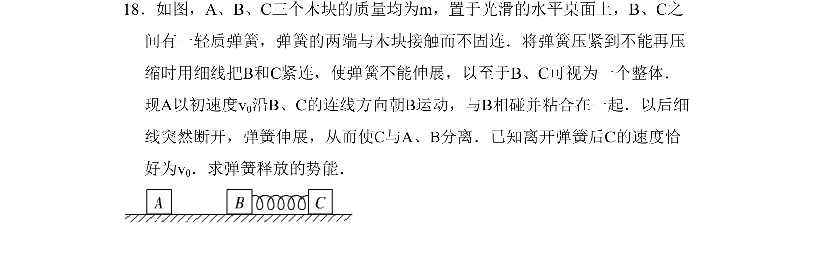
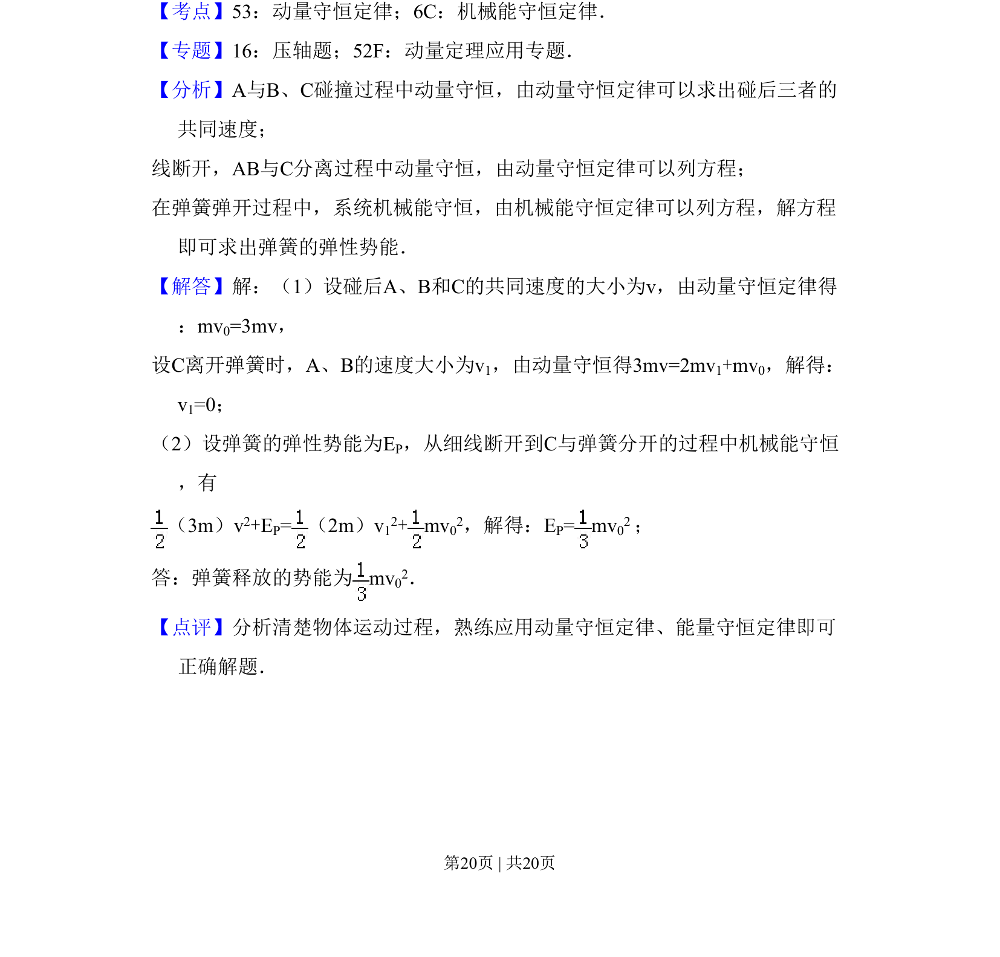

考点：动量守恒定律 机械能守恒定律

碰撞与弹簧问题中的动量守恒和机械能守恒综合应用

📄 原 PDF 第 20 页：
素材/真题/吉林/2008-2024·（吉林）物理高考真题/2011年高考物理试卷（新课标）（解析卷）.pdf
18．如图，A、B、C三个木块的质量均为m，置于光滑的水平桌面上，B、C之 间有一轻质弹簧，弹簧的两端与木块接触而不固连．将弹簧压紧到不能再压 缩时用细线把B和C紧连，使弹簧不能伸展，以至于B、C可视为一个整体． 现A以初速度v0沿B、C的连线方向朝B运动，与B相碰并粘合在一起．以后细 线突然断开，弹簧伸展，从而使C与A、B分离．已知离开弹簧后C的速度恰 好为v0．求弹簧释放的势能．
【考点】53：动量守恒定律；6C：机械能守恒定律．菁优网版权所有 【专题】16：压轴题；52F：动量定理应用专题． 【分析】A与B、C碰撞过程中动量守恒，由动量守恒定律可以求出碰后三者的 共同速度； 线断开，AB与C分离过程中动量守恒，由动量守恒定律可以列方程； 在弹簧弹开过程中，系统机械能守恒，由机械能守恒定律可以列方程，解方程 即可求出弹簧的弹性势能． 【解答】解：（1）设碰后A、B和C的共同速度的大小为v，由动量守恒定律得 ：mv0=3mv， 设C离开弹簧时，A、B的速度大小为v1，由动量守恒得3mv=2mv1+mv0，解得： v1=0； （2）设弹簧的弹性势能为EP，从细线断开到C与弹簧分开的过程中机械能守恒 ，有 （3m）v2+EP=（2m）v 12+mv 02，解得：EP= mv 02 ； 答：弹簧释放的势能为mv 02． 【点评】分析清楚物体运动过程，熟练应用动量守恒定律、能量守恒定律即可 正确解题．